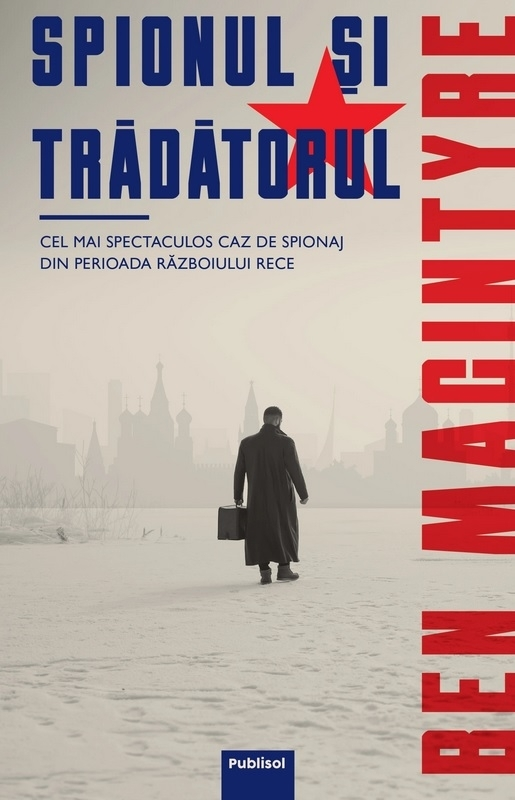

- CIA și KGB – Agenția Centrală de Informații americană (CIA) și Comitetul pentru Securitatea Statului sovietic (KGB) au fost cele două servicii secrete care au definit spionajul Războiului Rece. Ambele au derulat operațiuni de infiltrare, sabotaj, asasinate și recrutare de agenți dubli pe tot globul.
- Cazuri celebre de spionaj – Cuplul Rosenberg, executat în SUA în 1953 pentru transmiterea de secrete nucleare URSS, sau Kim Philby, ofițer britanic care a lucrat pentru sovietici timp de zeci de ani, sunt printre cele mai cunoscute cazuri. Afacerea avionului U-2 (1960) a fost un alt incident major.
- Propaganda – Ambele tabere au folosit filmul, presa, radioul și manualele școlare pentru a-și impune viziunea. Radio Europa Liberă și Vocea Americii transmiteau în Estul comunist, iar URSS răspundea prin Radio Moscova și controlul total al presei interne.
- Cultul personalității – În blocul comunist, propaganda promova imaginea liderilor (Stalin, Mao, Ceaușescu) ca figuri infailibile. Statuile, parăzile și sloganele erau instrumente de control ideologic asupra populației.
- Cenzura și securitatea internă – În țările comuniste, inclusiv România, serviciile secrete (Securitatea în cazul nostru) urmăreau cetățenii, ascultau telefoane, recrutau informatori și pedepseau orice formă de disidență. Libertatea de exprimare era sever limitată.
